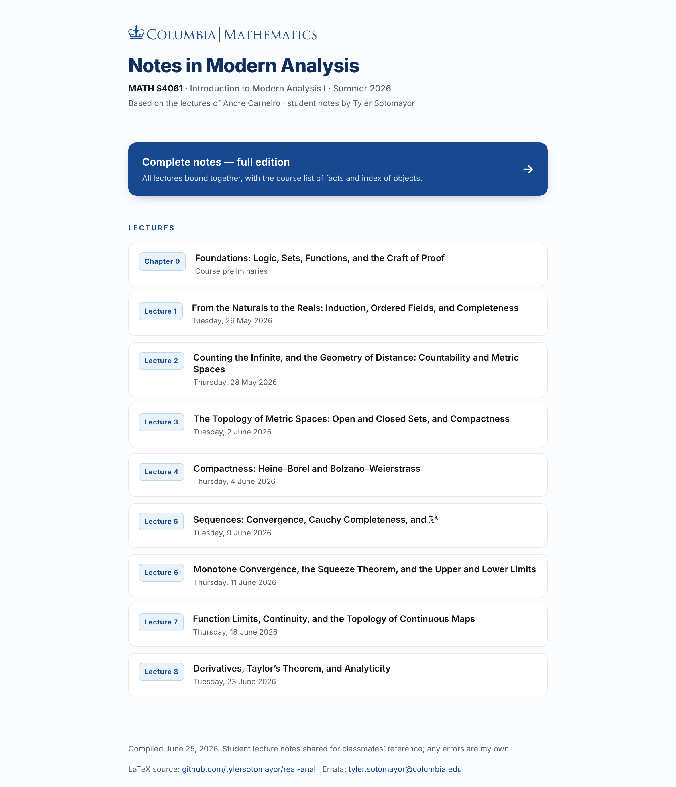
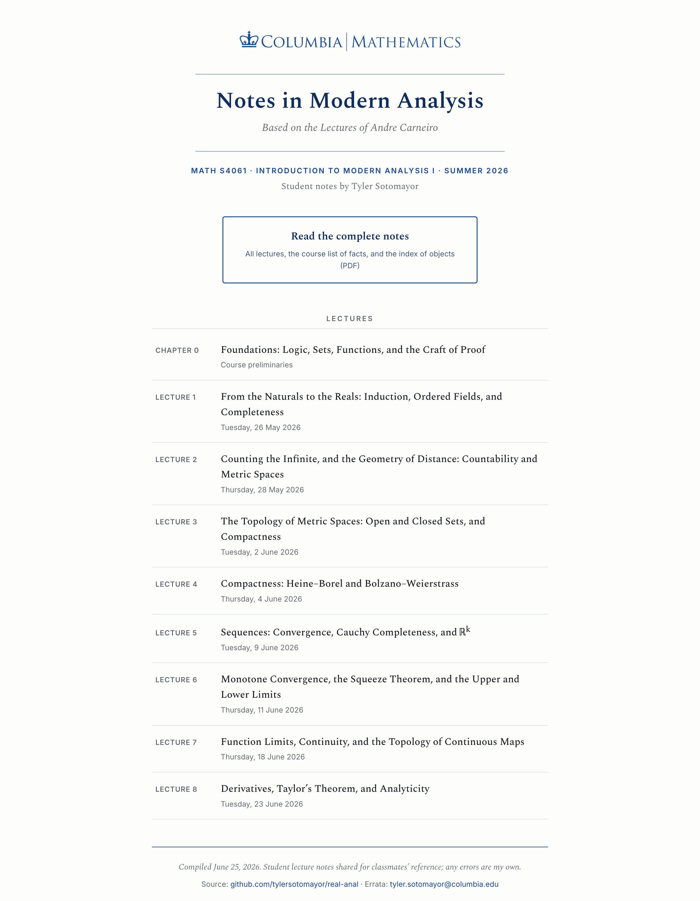
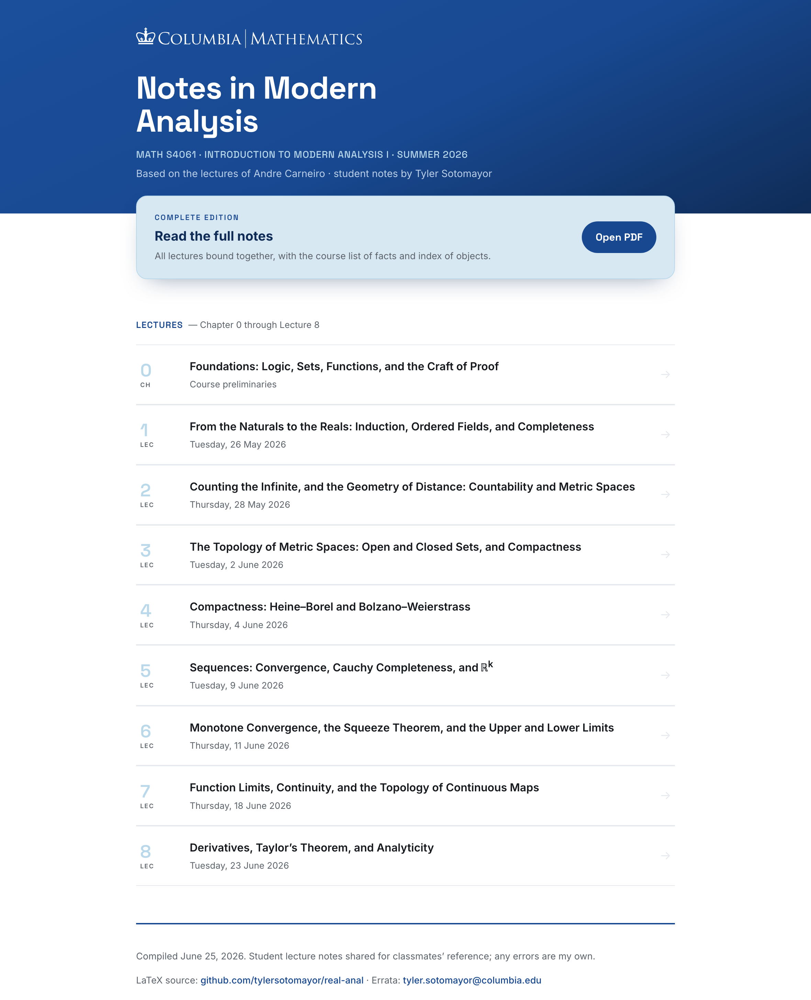

Columbia | Mathematics · MATH S4061
Three directions for Notes in Modern Analysis, each built on the official Columbia Mathematics wordmark and palette. Click any card to open the full, interactive page. The live site at tylersotomayor.github.io/real-anal is unchanged.
Drafts · not linked from the live page
The polished evolution of the current site — clean Inter sans, card layout, official Columbia blue. Familiar and crisp.

Spectral serif, centered crown, thin blue rules — echoes the notes’ own PDF title page. Reads like a Columbia department publication.

A deep Columbia-blue hero with the white crown logo and large Space Grotesk numerals. Modern, bold, eye-catching.